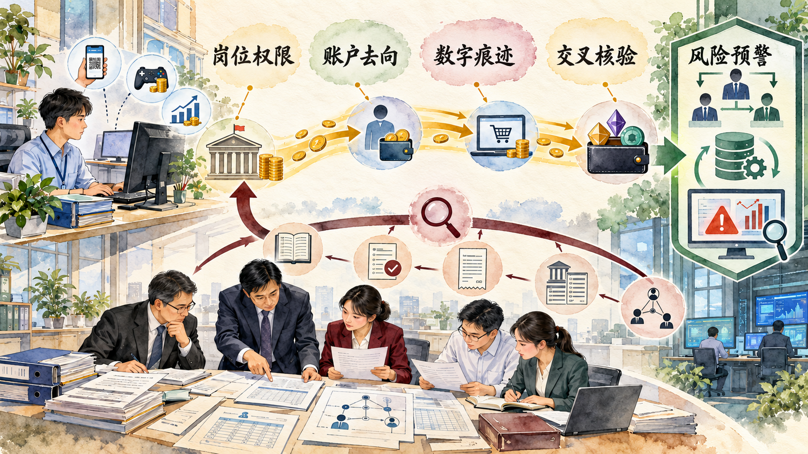
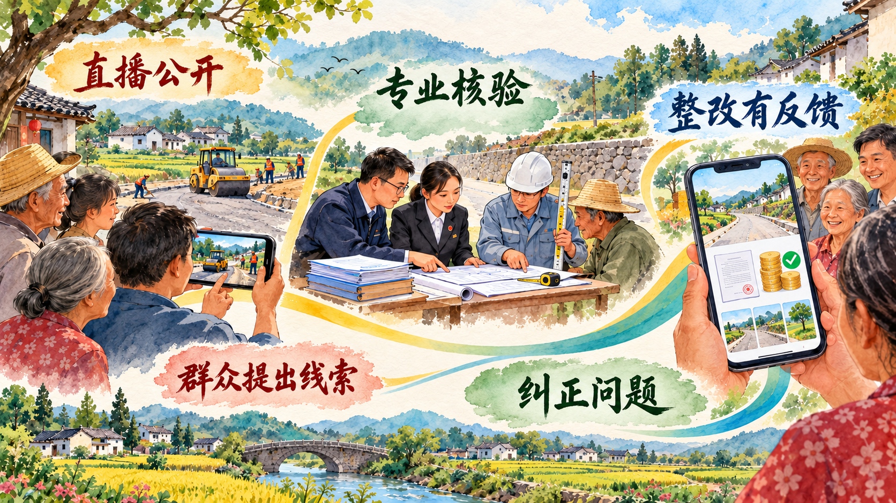

党的各项建设怎样形成一个整体
本节观察全面从严治党的系统结构。政治建设确定方向，思想建设固本培元，组织建设提供力量，作风建设和纪律建设规范行为，制度建设把成熟经验固定为长期规则。各项建设相互联系，共同提高党的建设质量。
一、把党的政治建设摆在首位
党的政治建设是党的根本性建设，决定党的建设方向和效果。首要任务是保证全党服从中央，坚持党中央权威和集中统一领导。政治建设落实到实际工作中，表现为党员干部提高政治判断力、政治领悟力、政治执行力，把党中央决策部署同本地区本部门职责结合起来。
政治纪律和政治规矩维护党的团结统一。严肃党内政治生活、发展积极健康的党内政治文化、净化政治生态，使全党在政治立场、政治方向、政治原则、政治道路上同党中央保持高度一致。
二、思想建设是党的基础性建设
思想建设回答党员干部以什么理想信念和价值追求安身立命。坚定理想信念，需要坚持不懈用党的创新理论武装头脑，把理论学习同改造主观世界、解决实际问题结合起来。学习成果通过政治立场、群众感情和履职行动表现出来。
思想教育还要进入年轻干部的成长过程。初入岗位时的兴趣爱好、消费方式和网络生活都属于日常生活，也可能成为利益关系靠近权力的入口。教育、管理和监督越贴近日常，干部越能辨认“投其所好”背后的关系塑造。
案例研究｜一天充值 5000 元以后：年轻副主任怎样被“兴趣定制礼”围猎
张裕 28 岁时成为当地最年轻的中层副职之一，所在岗位参与企业环境服务考核、项目评价等工作。新的职务带来更大裁量空间，也让一些经营者开始观察他的生活习惯和兴趣偏好。接近从电子产品、节日礼品、婚礼和乔迁时的礼金，以及带有熟人交往色彩的日常聚会开始，交往边界逐步松动。经营者在建立私人关系后，再把咨询、能源评价、设备业务和项目验收等事项带到他面前。
这条关系链经历了由生活交往进入履职事项的变化。最初的礼物容易被解释为年轻朋友之间的往来，婚礼、乔迁和节日又提供了看似自然的送礼场景。经营者持续出现后，礼物的提供者、企业业务和张裕手中的评价验收权开始重合。每一次接受利益都使拒绝下一次请托更加困难，私人关系逐步形成稳定的利益关系。
网络游戏成为这条关系链中最贴近个人兴趣的一环。张裕一度一天充值超过 5000 元，两年游戏充值约 18 万元，这些钱大多由与其职权发生联系的经营者提供。经营者不必等待固定节日，也不必把实物送进办公室，只需围绕游戏账户持续支付。充值发生得越频繁，消费习惯越容易超出正常收入能够承受的范围，提供资金的人也越容易成为维持这种消费方式的固定来源。
围猎者选择游戏充值，因为这种礼物同时具有隐蔽性、连续性和可定制性。现金或实物容易在一次交付中引起警觉，游戏账户却可以按需充值，金额被拆散在许多次操作中。充值带来的即时满足又会提高下一次消费预期。当个人工资难以覆盖消费习惯时，掌握业务关系的经营者便从“陪你玩”和“帮你充”逐步变成稳定资金来源。
案件调查把生活消费与履职行为对照起来：电子产品和礼金由谁提供，游戏充值由谁承担，相关企业随后参与了哪些咨询、能源评价或设备业务，资金往来发生在什么时间，张裕又在项目承揽、服务评价和验收环节采取了什么行动。婚礼红包、乔迁礼金、节日往来和游戏充值共同呈现关系逐步加深的过程。生活中的“投其所好”与工作中的“请你关照”在时间和主体上相互对应，兴趣、资金和权力由此形成可核查的完整链条。2017 年 2 月，有关机关对其立案审查调查。
这个案例说明，思想建设、日常教育和岗位监督需要共同作用。干部的兴趣本身属于个人生活，经营者围绕兴趣持续提供高额资金后，私人消费与公共权力发生连接。组织及时了解年轻干部的思想、生活和交往情况，关键岗位设置复核与回避机制，能够在请托事项进入履职过程时留下监督接口。
讨论题
- 游戏充值与传统送礼在速度、频率和隐蔽方式上有哪些差异？
- 如果你是同事或组织负责人，哪些消费、交往和业务迹象会提示需要谈话提醒或核查？
- 对年轻干部的教育怎样同时覆盖理想信念、网络生活和岗位权力？
资料来源：中国纪检监察杂志《警惕年轻干部被“围猎”》，2021 年 2 月 21 日。
三、贯彻新时代党的组织路线
党的力量来自组织。新时代党的组织路线把组织体系建设、干部队伍建设和人才工作连接起来。严密的组织体系使党中央决策部署传导到基层，正确的选人用人导向使忠诚干净担当的干部得到使用，基层党组织则把群众组织起来、把各项任务落实下去。
干部成长既要有实践历练，也要有严格管理。对年轻干部早教育、早提醒、早纠偏，对关键岗位明确权责边界、轮岗交流和监督程序，可以把组织培养同组织管理统一起来。
四、以严的基调强化正风肃纪
作风问题关系人心向背。中央八项规定从调查研究、会议活动、文件简报、公务接待等具体事项切入，推动党员干部把更多精力用于解决实际问题。纠治形式主义、官僚主义，也要分析基层负担从何产生，改进考核、报表和督查方式。
纪律是管党治党的戒尺。党的纪律包括政治纪律、组织纪律、廉洁纪律、群众纪律、工作纪律和生活纪律。纪律教育帮助党员干部明确行为边界，监督执纪则通过日常监督、线索处置和责任追究维护规则权威。
案例研究｜五个月、56 次转账：网络赌博怎样击穿财务岗位内控
1994 年出生的杜小菊进入乡镇工作后担任会计。会计负责记录和核算资金，出纳负责具体收付，两项工作通常由不同人员承担。一次出纳休产假，使杜小菊临时兼任出纳，会计核算、现金收付和账户操作集中到同一人手中。她既能接触账目，也能操作资金转出，原本应当相互制约的记账、付款和账户管理出现重叠，一笔资金从账面记录到实际支付缺少第二双眼睛。
2019 年 7 月，杜小菊接触网络赌博。最初的投注金额较小，手机上的输赢结果很快出现，亏损后又可以立即进入下一轮，她逐渐产生通过追加投注把损失赢回来的想法。8 月，她第一次将 4 万元公款转出；这笔钱投入后没有填平亏损，随后又为进入所谓高级会员转出 25 万元。赌博平台以返利、等级和继续充值诱导追加资金，账户上的损失不断转化为下一次转账的理由。五个月内，她先后 56 次转出公款，共计 237 万元。
“翻本”心理改变了她对每次转账的判断。前一笔亏损没有使行为停止，反而被理解为下一笔投注必须追回的缺口。平台的会员等级、即时输赢和充值入口缩短了犹豫时间，兼任会计和出纳则缩短了从产生冲动到取得资金的组织距离。4 万元、25 万元以及后续资金在一次次操作中越滚越大，56 次转账也把一次越界变成持续五个月的资金缺口，公共账户逐渐被当成随时可以抽取的赌资来源。
数字支付缩短了从冲动到转账的时间，岗位权限集中又使异常交易得以连续发生。案件核查需要把 56 次银行转账同财务凭证、账户余额和岗位操作逐笔对应，确认每次资金转出以后是否具有真实业务依据。重复发生的非正常支付、长期扩大的账实差额和缺少审批支撑的转账，共同暴露公共账户已经偏离规定用途。杜小菊后来主动投案，受到开除党籍、开除公职处分，法院判处有期徒刑六年六个月。
复盘这 56 次转账，可以找到多个能够阻断风险的节点：出纳休假时设置临时代办和独立复核人员，大额付款实行双人授权，银行流水由业务岗位以外人员定期核对，连续向个人或异常账户转账触发预警。案件暴露以后，当地重新检查财务授权、印章管理、账户使用和轮岗安排，把临时兼岗也纳入正式审批和监督范围。
这个案例呈现了纪律教育与制度控制的连接。个人对网络赌博的沉迷触发风险，会计与出纳职责重叠放大风险，账户复核和异常预警缺位使损失持续累积。风险治理因此同时进入八小时外教育、岗位分离、支付授权和账户监测。
讨论题
- 这起案件中，个人行为、岗位设置和技术控制分别在哪一步失守？
- 如果单位人手有限，怎样通过授权、复核和定期对账维持基本制约？
- 网络赌博的即时反馈和“翻本”心理为什么会放大公共资金风险？
资料来源：中央纪委国家监委网站《网络赌博背后的年轻干部腐败案》，2021 年 8 月 11 日。
五、把制度建设贯穿到党的各项建设之中
制度建设具有根本性、全局性、稳定性和长期性。党内法规把党的领导和党的建设活动纳入规范化轨道，权力清单、审批程序、财务控制、巡视巡察和信息公开等制度则把监督嵌入履职过程。
制度的生命力在于执行。发现一项违纪违法问题后，既处理责任人，也要查找权力配置、业务流程和监督接口中的漏洞，把个案整改转化为同类治理。
案例研究｜一个改名后的收款码：养老金补缴款怎样进入个人账户
穆玉龙 2016 年进入县人力资源和社会保障部门工作，负责城乡居民养老保险有关业务。群众和基层经办人员熟悉他的工作身份，也习惯向他询问补缴条件、金额和办理方式。2019 年 12 月，他把个人支付宝收款页面改成单位名称，再以工作人员身份出示二维码。手机页面呈现的是单位标识，资金实际进入的却是个人控制的账户，缴费人很难只凭付款界面辨认收款主体。
2019 年 12 月至 2020 年 5 月，27 个单位、178 人通过支付宝、微信和现金向他交付养老保险补缴款，累计 60 余万元。单位经办人员把多名参保人的款项汇集后交给熟悉业务的工作人员，个人缴费人则期待补缴记录随后进入社保系统。穆玉龙只把其中 8000 余元缴入规定账户，其余资金用于个人消费和偿还债务。扫码支付省去了现金清点和柜台办理，也让“页面显示谁”和“资金实际到谁”之间的差异被界面名称遮蔽。
对缴款人来说，二维码由熟悉政策、办理业务的工作人员出示，页面又显示单位名称，操作过程很像一次普通的线上政务缴费。付款完成后，手机只显示已经向该页面支付，缴费人仍需要正式票据和系统记录确认公共缴费已经完成。对经办人来说，政策解释、金额告知、二维码收款和后续登记集中在同一处，个人账户便混入公共服务流程。27 个单位和 178 名缴款人的资金分批进入，单笔支付分散在不同时间和不同人员之间，累计风险不断增大。
问题从一张正式票据被发现。一名缴费人员完成付款后索要票据，会计查询财务账户时没有找到相应入账记录，付款页面上的“单位名称”第一次同单位真实账目发生冲突。核查人员随即从这笔款项向前追踪，调取缴费名单、单位经办记录、聊天信息、支付宝和微信流水，再同公共账户、社保业务登记逐笔比对。
核查由一笔没有入账的补缴款扩展到其他单位和个人，逐步回答四个问题：谁按照穆玉龙告知的金额交了钱，使用了哪一种支付方式，资金进入了哪个账户，参保人的补缴业务是否真实完成。27 个单位、178 人、60 余万元和公共账户实际收到的 8000 余元由此被放在同一张资金与业务清单中。群众信任、个人二维码、业务经办权、票据缺口和个人消费债务共同构成了案件链条。

整改由此进入收款渠道、票据和岗位权限：公共缴费使用可核验的单位账户与正规入口，业务经办和资金收取相互分离，缴费记录及时反馈给群众，后台定期比对业务名单与实际入账。数字工具在规范流程中提高便利，也为每笔资金留下可追踪记录。
讨论题
- 一个显示单位名称的个人收款码，为什么容易获得群众信任？
- 业务名单、正式票据和公共账户流水三者怎样相互校验？
- 面向群众设计线上缴费入口时，怎样让“方便”与“可核验”同时实现？
资料来源：中央纪委国家监委网站《警惕“指尖上的腐败”》，2021 年 7 月 18 日。
案例研究｜村民在手机里看工程验收：一条直播弹幕怎样推动村级工程全流程监督
村级道路、饮水和环境整治工程金额有限，却直接影响村民生活。过去，村民看到的是施工现场和完工结果，预算、材料、工程量和验收过程较难进入日常监督。福建一些地方把村务公开平台、直播和线下核验结合起来，让群众在施工前、施工中和验收时都有信息入口。
在长汀县上坪村，一项道路扩建工程总造价为 13.9 万元。工程进入验收环节后，现场画面通过手机端直播，村民可以边看边留言。有人从直播画面中发现验收情况同自己每天经过现场时看到的情况存在差异，弹幕中的疑问被乡纪委工作人员记录下来。手机上的一句留言由此从普通评论变成了需要办理的监督线索。
乡纪委没有只凭直播画面作出判断，而是沿着工程资料继续核查。项目合同约定了什么内容，施工方实际完成多少工程量，验收人员依据什么签字，付款数额同完成工程是否一致，都需要回到合同、预算、现场测量和验收记录中确认。复核发现，验收把关不严造成多支付工程款 5 万余元。问题从屏幕上的现场疑点进入工程量核验、资金追回和责任追究。
村民的优势在于熟悉现场。他们每天经过施工路段，知道哪一处雨天容易积水，哪一段路基曾经松动，也能比较承诺工期与实际进度。直播把分散的生活经验汇集起来，一条关于宽度、用料或施工位置的留言，可以成为现场复核的具体线索。
发现问题以后，当地把监督向工程前端延伸。村级小型工程的决策、发包、施工、验收四个关键环节进入“阳光直播间”：立项前公开群众需要和预算，发包时公开承建主体和程序，施工中展示进度与用料，验收时让合同、工程量和现场结果接受核对。线上留言被登记、转交和反馈，追回资金和责任处理结果也进入公开环节。
在上杭县六甲村，监督人员检查饮水工程时发现工程造价存在问题。审计人员依据合同、材料、工程量和现场重新核准造价，推动追回虚增费用；当地随后细化项目管理流程，建立由相关人员共同参加的联合审验机制。村民熟悉水源、管线和日常用水状况，能够指出现场容易忽略的位置；专业人员核验工程量、材料质量和技术标准；纪检监督人员继续检查问题办理和责任落实。群众经验与专业验收由此形成分工。
工程监督因此形成两种观察尺度。村民从“水能不能稳定送到家”“道路修好后是否方便通行”判断实际效果，专业人员依据合同、图纸、工程量和技术标准判断建设质量。纪检监督人员再检查问题是否登记、由谁办理、何时整改、资金是否追回和结果怎样公开，使直播中的意见能够进入正式办理程序。上坪村的 13.9 万元工程和 5 万余元多付款也说明，小型工程同样需要完整的验收责任与资金复核。

直播的治理作用来自完整流程：项目立项和预算先公开，施工过程可查看，问题留言有人受理，现场核验形成处理意见，整改和验收结果再次公开。手机屏幕扩大了参与范围，专业审核保证技术判断，纪检监督推动意见得到办理。
讨论题
- 村民在直播中最容易发现哪些问题，哪些问题仍需专业人员核验？
- 一条弹幕要转化为有效监督，需要经过哪些办理和反馈环节？
- 如果只直播施工画面而不公开预算、合同和验收结果，监督链条会缺少什么？
资料来源：中国纪检监察报《“阳光直播”让小微权力在阳光下运行》，2025 年 5 月 12 日；中国纪检监察杂志《基层监督怎样更好融入基层治理》，2026 年 2 月 24 日；中央纪委国家监委网站有关基层小微权力监督材料，2025 年 6 月。
参考资料｜数字经济时代青年干部违纪违法有哪些新表现
数字生活改变了利益输送和公共资金流转的形式。第一类风险来自网络消费和行为成瘾，游戏充值、网络赌博、直播打赏具有即时反馈和连续支付特点；第二类风险来自二维码、移动支付和个人账户，公共缴费可能在界面相似的情况下进入私人账户；第三类风险来自虚拟货币和多层账户，资金经过多次转换后增加调查难度；第四类风险也来自数字痕迹，支付时间、设备、聊天、审批和业务数据能够相互印证。
青年干部熟悉数字工具，也更需要理解岗位权限在数字环境中的边界。纪律教育进入网络社交、兴趣消费和八小时外生活，单位内部控制进入账户权限、双人复核和异常预警，监督调查则通过业务数据与资金流水比对还原事实。数字化改变行为方式，同时提供了更细密的监督线索。
资料来源：中央纪委国家监委网站《加强年轻干部教育管理监督》，2025 年 2 月 12 日；本章 C4—C6 案例原始材料。